Cómo recibir pedidos en vivo, cobrar, llevar la caja al centavo y actualizar precios, fotos y promos de Le Piaf en segundos.
Pizzas a la PiedraLomos en Pan ÁrabeCocción a la Leña10 Promos en CarruselMasa Madre Artesanal
Web: Sitio Oficial · Panel: /panelOctubre 2026 · Desarrollo y soporte: Cristian Delgado (delgadodev.com.ar · Tel. 261 747-8090)
Antes de empezar
El sistema de Le Piaf está dividido en dos partes conectadas en tiempo real:
La web pública del local: donde los clientes miran las promos en carrusel, eligen pizzas a la piedra, lomos en pan árabe casero o calzones, y envían su pedido directo desde el celular.
El panel de administración (/panel): el centro de control del local para aceptar pedidos, avisar por WhatsApp en un toque, manejar la caja ciega y actualizar la carta.
Así ven la portada los clientes desde su celular.
💡 Usá una compu o tablet en el mostradorEn pantalla grande ves las tres columnas de pedidos juntas (Nuevos, En preparación y Listos). El celular sirve como respaldo o para cambiar un precio rápido.
Qué vas a encontrar en este manual
Entrar al panel y tu contraseña
Un día de trabajo, paso a paso
Pedidos: el tablero y el detalle
Clientes nuevos y filtro anti-pedidos falsos
Cobrar y entregar
Cargar un pedido de mostrador o teléfono
Delivery y confirmación de envío
La caja: apertura, gastos y cierre
Resumen y estadísticas de ventas
La carta: productos, extras y aumentos
Promos y banner de fecha especial
QR de la carta para mostrador y flyers
Configuración del local y horarios
Cómo pide el cliente y problemas comunes
Permisos según el rol
Rol
Qué puede hacer en el sistema
Dueño
Acceso total: pedidos, caja, estadísticas de ventas, carta, promos, QR y configuración del local.
Encargado
Todo lo operativo (pedidos, caja, ventas, carta, promos y QR), excepto la configuración general.
Mozo / Mostrador
Ver el tablero, cargar pedidos manuales y gestionar los pedidos que cargó.
1. Entrar al panel y tu contraseña
Abrí la dirección web del panel agregando /panel (o /login).
Escribí tu email y tu contraseña. El ícono del ojito te permite verificar lo que escribís.
Tocá Entrar.
🔒 Bloqueo automático tras 5 intentosSi ingresás mal la contraseña 5 veces seguidas, el acceso se bloquea durante 10 minutos por seguridad. Podés esperar o tocar ¿La olvidaste?.
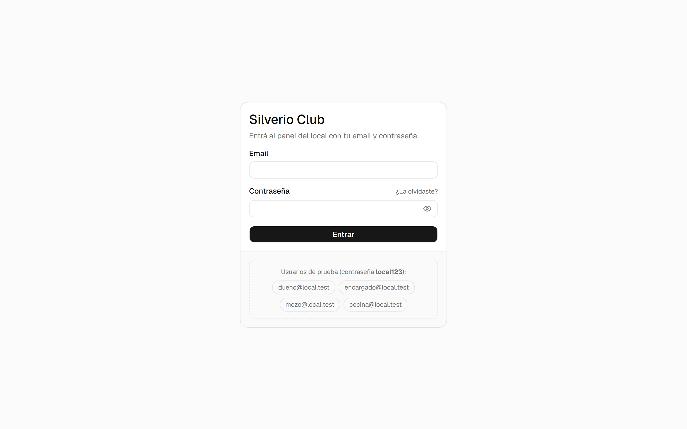
Pantalla de ingreso a Le Piaf.
Me olvidé la contraseña
En la pantalla de entrada tocá ¿La olvidaste?.
Escribí tu email y tocá Enviarme el link.
Abrí el correo que te llega (revisá también Spam o No deseado), entrá al link y elegí una clave nueva.
Cambiar la contraseña desde adentro
En el menú izquierdo entrá a Mi cuenta. Escribí tu contraseña actual, la nueva dos veces (mínimo 8 caracteres) y tocá Cambiar contraseña.
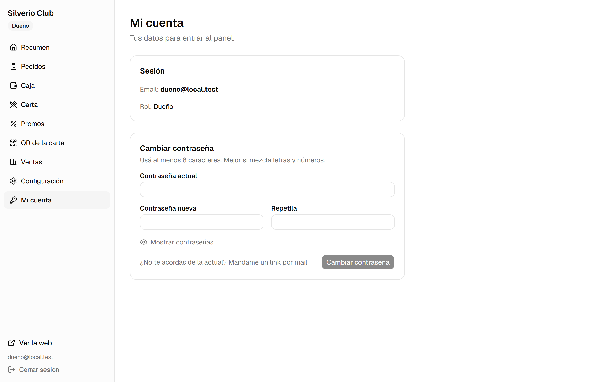
Mi cuenta: datos de tu sesión y cambio de clave.
2. Un día de trabajo, paso a paso
Abrí la caja antes del turno cargando el efectivo inicial para dar vuelto (Caja → Abrir caja).
Entrá a Pedidos y tocá el botón amarillo Activar timbre para que la compu suene cada vez que entra un pedido web.
Cuando entra un pedido nuevo, revisalo y tocá Aceptar Pedido: pasa a En cocina (Preparando) y el cliente lo ve en vivo en su celular.
Cuando sale del horno a la leña o la plancha, tocá ¡Marcar Plato Listo! para pasarlo a Listos para despacho.
Al entregarlo en mostrador o enviarlo por delivery, tocá Cobrar y entregar y elegí si pagó en efectivo o transferencia.
Si sacás efectivo de la caja para pagar insumos, bolsas o mercadería, anotalo en Caja → Movimientos de efectivo.
Al terminar la noche, cerrá la caja: contás los billetes y el sistema calcula al instante si da justo, sobra o falta.
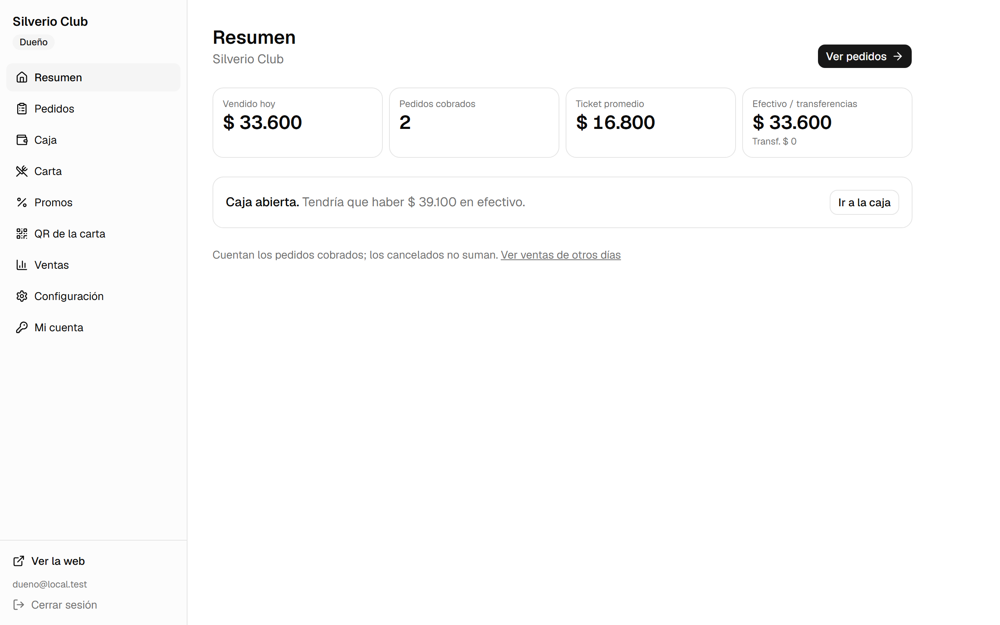
Resumen diario: total vendido hoy, pedidos cobrados, ticket promedio y estado de la caja abierta.
3. Pedidos: Pantalla de Cocina en vivo
Los pedidos aparecen solos en pantalla apenas el cliente los envía, sin recargar la página. Cada columna representa una etapa del servicio:
Nuevos (Aceptar)Recién entraron desde la web. Hay que aceptarlos.
En Cocina (Preparando)Están en cocina / horno a la leña.
Listos para DespachoTerminados, esperando que el cliente retire o salgan a delivery.
Pantalla de Cocina en vivo con pedidos de Le Piaf (Pizzas a la piedra, Lomos en pan árabe, Calzones y Promos).
Cómo leer cada tarjeta
#5, #4, #3: número correlativo del pedido en la jornada. Es el número que ve el cliente.
Web / Mostrador / Teléfono: canal por el que ingresó.
🕐 minutos: hace cuánto entró. Se pone en rojo si un pedido nuevo lleva más de 5 minutos sin aceptarse o si superó la demora estimada.
Detalle de productos, promos y notas resaltadas (ej. “Sin cebolla en el Lomo”).
El total y el estado del pago: FALTA COBRAR (con el medio elegido) o PAGADO.
🔔 Importante sobre el timbrePor reglas de los navegadores web, el audio sólo se habilita después de hacer clic en la página. Apenas abras el panel al iniciar el turno, tocá Activar timbre.
3. Pedidos: el detalle y WhatsApp en 1 clic
Hacé clic sobre cualquier tarjeta del tablero para abrir su ficha completa:
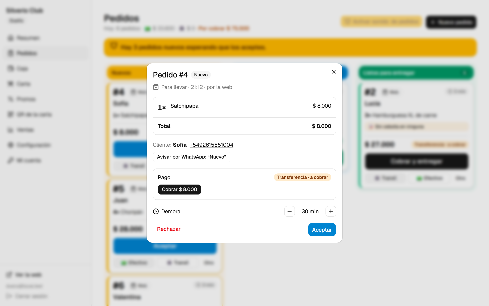
Detalle completo del Pedido en el panel.
Avisar por WhatsApp: abre WhatsApp Web o la app con el mensaje ya redactado para ese cliente según la etapa (por ejemplo, para confirmarle que está en preparación o avisarle “Tu pedido está listo para retirar 🙌”).
Demora estimada: con los botones − y + podés subirla o bajarla de a 5 minutos si la cocina está tranquila o con mucha demanda; el cambio se actualiza en vivo en el celular del cliente.
Rechazar / Cancelar pedido: te pide escribir el motivo (ej. “Nos quedamos sin masa de lomo”) y se lo informa automáticamente al cliente en su pantalla de seguimiento.
4. Clientes nuevos y filtro anti-pedidos falsos
Para proteger la cocina de pedidos en broma sin obligar a los clientes a crearse una cuenta con contraseña, la primera vez que un número de teléfono pide por la web debe confirmarlo por WhatsApp:
Cuando el cliente nuevo envía su pedido, su celular le muestra “Falta un paso” con un botón verde que abre tu WhatsApp con el texto listo (“Hola Le Piaf, confirmo mi pedido #7…”).
En tu tablero, ese pedido aparece con borde punteado y la etiqueta ⏳ Sin confirmar · vence en 15 min.
Apenas recibís su mensaje de WhatsApp, tocás el botón verde ✓ Ya confirmó por WhatsApp en la tarjeta y pasa a ser un pedido normal listo para aceptar.
Si pasan 15 minutos y nunca mandó el WhatsApp, el sistema lo cancela solo automáticamente para que no cocines en vano.
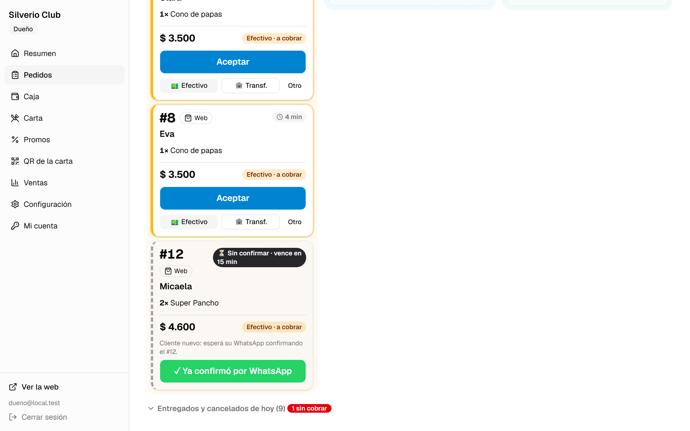
En el panel: pedido esperando el WhatsApp del cliente nuevo.En el celular del cliente nuevo: aviso de “Falta un paso”.
✓ Los clientes habituales piden directoUna vez que a ese número de teléfono se le entregó su primer pedido, el sistema lo recuerda como cliente verificado y en sus próximas compras ya no le pide confirmación adicional.
Bloquear un número molesto
Si algún número insiste con pedidos falsos, abrí el detalle del pedido y tocá Bloquear este número. Podés ver o desbloquear números cuando quieras desde Configuración → Pedidos falsos.
5. Cobrar y entregar
Tenés tres maneras prácticas de registrar el cobro según el momento del servicio:
Forma de cobro
Cuándo conviene usarla
Botones rápidos 💵 Efectivo o 🏦 Transf. en la tarjeta
Registra el cobro exacto del total en un solo clic (por ejemplo, si te mandaron el comprobante de transferencia mientras el pedido está en el horno). Abajo aparece Deshacer por si tocaste sin querer.
Botón Otro en la tarjeta
Ideal si el cliente paga mitad en efectivo y mitad por transferencia, o para calcular el vuelto exacto.
Botón grande Cobrar y entregar
Cuando el pedido ya está en la columna Listos para entregar y todavía no estaba pagado: al tocarlo te pregunta cómo pagó y en el mismo paso lo cobra y lo marca como entregado.
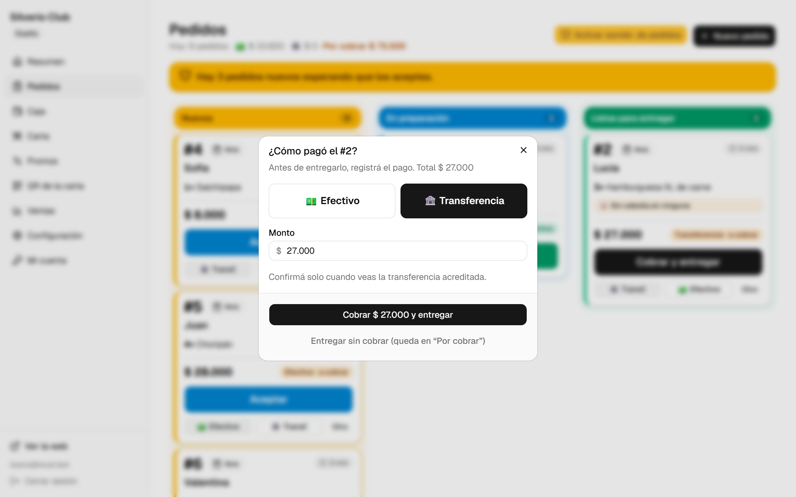
Ventana al tocar “Cobrar y entregar” sobre un pedido listo.
Entregar sin cobrar (cuenta pendiente)Si un cliente de confianza retira y te dice que transfiere al llegar a la casa, podés tocar Entregar sin cobrar. El pedido pasa al listado inferior con una alerta roja para que no te olvides de registrarlo cuando entre el pago.
6. Cargar un pedido de mostrador o teléfono
Para los clientes que se acercan directamente al mostrador de Ozamis y Vergara o llaman por teléfono, entrá a Mostrador en el menú izquierdo o tocá el botón + Cargar en Mostrador arriba a la derecha en la pantalla de Pedidos:
Tocá las promos o productos a la izquierda para sumarlos al pedido (podés filtrar rápido con el buscador). Si elegís lomo o pizza con agregados, te permite marcarlos.
Ajustá las cantidades con − y + a la derecha.
Elegí la forma de entrega (Para llevar o Para comer acá) y el origen (Mostrador o Teléfono).
Escribí una referencia en Nombre (ej. Carlos (Mostrador)) y, si querés, su WhatsApp.
Seleccioná cómo paga, marcá Ya pagó si te abona en el momento y tocá Cargar pedido.
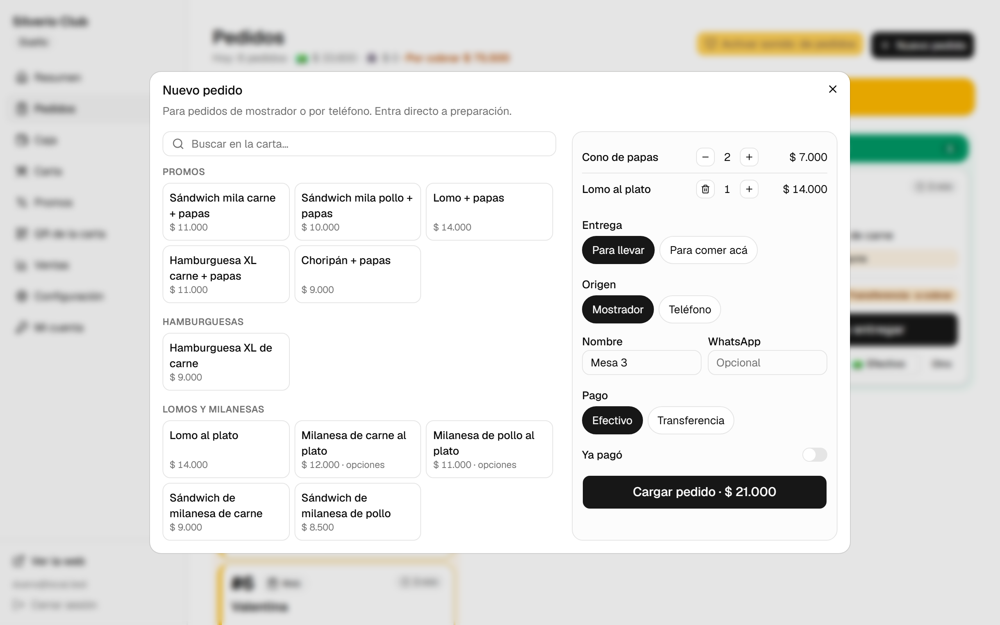
Carga rápida de mostrador o teléfono: entra directo a la columna “En Cocina (Preparando)”.
7. Delivery y formas de entrega
El local puede trabajar con Retiro en el local y Delivery. Cuando quieras habilitar envíos a domicilio (o deshabilitarlos una noche de lluvia o alta demanda), entrás a Configuración → Formas de entrega:
Al activar el interruptor de Delivery, la web le permite al cliente elegir envío a domicilio y escribir su calle, numeración y referencias en Maipú.
La web le avisa que el costo de envío se confirma según su ubicación en Maipú.
En el tablero de pedidos verás la dirección del cliente y la etiqueta Envío a confirmar.
Dentro del detalle del pedido ingresás el monto del envío y tocás Guardar envío: se suma automáticamente al total y el cliente lo ve reflejado en su seguimiento.
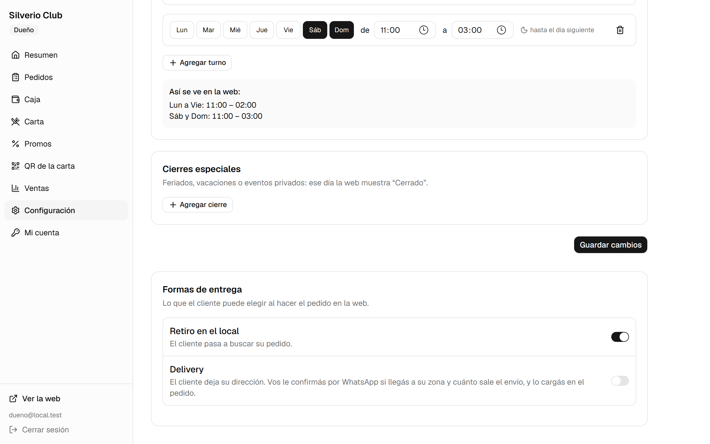
Configuración → Formas de entrega (Retiro en el local y Delivery).
8. La caja: apertura y movimientos
1. Abrir la caja al iniciar el turno
Entrá a Caja en el menú izquierdo, ingresá el monto de efectivo con el que arrancás para dar cambio y tocá Abrir caja. A partir de ese momento, cada pedido que marques como cobrado se suma solo a tu turno.
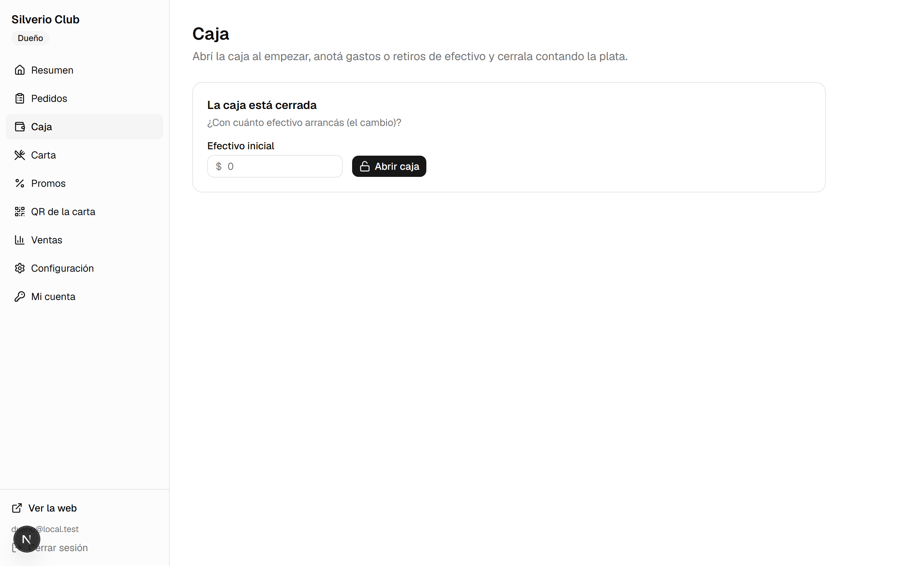
Pantalla de Caja antes de abrir el turno del día.
2. Control en vivo y movimientos de efectivo
Mientras la caja está abierta, ves en grande el Efectivo en caja que tiene que haber en el cajón, el total de Transferencias y los Pedidos cobrados. Si sacás plata en efectivo para pagarle a un proveedor (cajas de pizza, mercadería, bebidas) o ingresás cambio, registrá el movimiento abajo eligiendo Sale plata o Entra plata, la categoría, el monto y el detalle.
Caja abierta con el desglose de efectivo, transferencias y movimientos registrados.
8. La caja: arqueo y cierre de turno
Al terminar la jornada, tocá el botón Cerrar caja arriba a la derecha.
Contá los billetes reales del cajón y escribí el monto en Efectivo contado. El sistema compara al instante contra lo esperado y te indica en verde “Da justo” o te avisa si “Faltan $…” / “Sobran $…”.
Verificá el total de Transferencias recibidas contra tu billetera virtual o home banking.
Agregá una nota opcional si querés dejar una aclaración y confirmá con Cerrar caja.
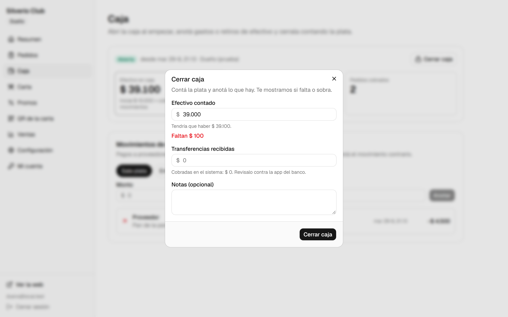
Arqueo de cierre: compara el efectivo que debería haber contra lo que contaste.
Debajo de la pantalla de Caja siempre queda guardado el Historial de cierres con fecha, hora, responsable y si hubo alguna diferencia.
9. Resumen y estadísticas de ventas
En la sección Ventas tenés una radiografía clara de cómo rinde el negocio (contando únicamente los pedidos efectivamente cobrados; los cancelados o rechazados no distorsionan tus números):
Tarjetas superiores: vendido hoy, cantidad de pedidos, ticket promedio y desglose entre efectivo y transferencias, comparado en porcentaje contra el mismo día de la semana anterior.
Últimos 7 o 30 días: gráfico de barras día por día para identificar tus noches más fuertes.
Lo más vendido y horarios pico: ranking de tus productos/promos estrella (Pizzas, Lomos, Calzones) y las franjas horarias en que entran más pedidos.
Panel de Ventas con historial de los últimos días, ranking de productos y horarios pico.
10. La carta: productos, fotos y aumentos
En Carta administrás las categorías y productos de Le Piaf. Cualquier cambio que guardes se publica en la web pública en cuestión de segundos.
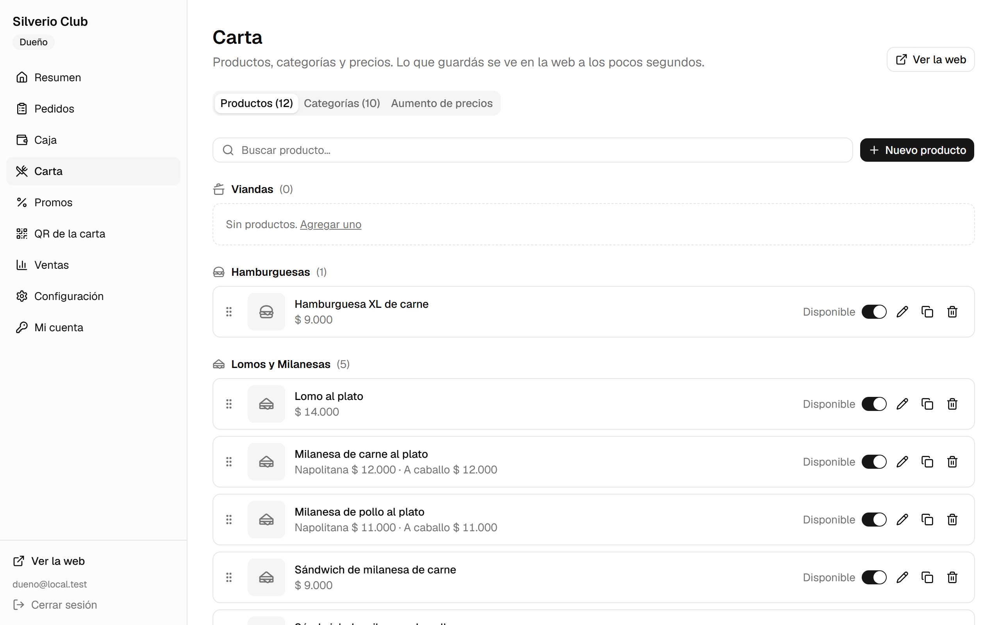
Listado de productos con sus fotos reales, precios y botón de disponibilidad.
¿Se acabó un producto esta noche? Apagá su interruptor Disponible. En la web queda visible pero marcado como agotado para que nadie lo pueda pedir hasta que lo vuelvas a prender.
Cambiar el orden: arrastrá las categorías o los productos desde los puntitos de la izquierda.
Aumento masivo de precios: en la pestaña Aumento de precios podés aplicar un porcentaje a toda la carta o a una categoría puntual (ej. Lomos o Pizzas), redondeando automáticamente los números y viendo una vista previa antes de confirmar.
Editar un producto, foto o adicionales
Tocando el ícono del lápiz abrís la ficha del producto para cambiar su nombre, descripción, precio, subir una foto nueva (se optimiza sola) o desplegar Más opciones para configurar variantes y agregados.
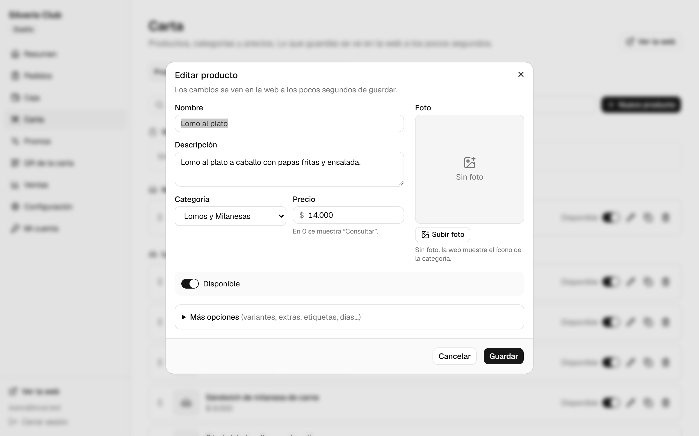
Edición de producto con su foto, precio y opciones adicionales.
11. Promos y banner de fecha especial
En Promos gestionás las 10 promociones que aparecen en el carrusel interactivo de la web con sus fotos reales (1080×1080). Podés prenderlas o apagarlas con un clic, cambiarles el precio o configurar en qué días y horarios están vigentes.
Arriba de las promos también contás con el Banner de fecha especial, ideal para destacar un combo por el Día del Amigo, un partido importante o fin de año:
Subís una imagen horizontal (para compu) y una vertical (para celular).
Escribís el texto descriptivo y elegís Desde qué fecha y Hasta qué fecha se muestra.
Se publica debajo de la portada y se apaga solo cuando termina la fecha elegida.
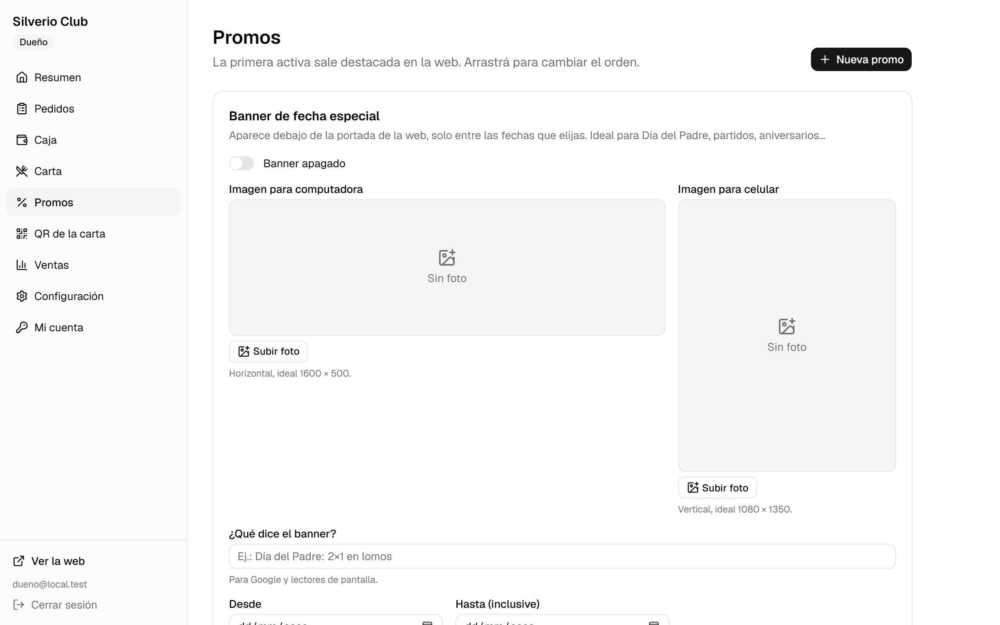
Administración del banner especial y de las promos de Le Piaf.
12. QR de la carta y 13. Configuración
QR oficial con el logo
En QR de la carta generás al instante el código QR con los colores oscuros y el logo oficial de Le Piaf en el centro, apuntando al enlace web oficial del local:
Descargar PNG: imagen en alta definición lista para subir a historias de Instagram, estados de WhatsApp o mandar a la imprenta para imanes y flyers.
Imprimir o guardar PDF: en formato 1 grande (para pegar en el mostrador o vidriera) o 4 por hoja (para las mesas).
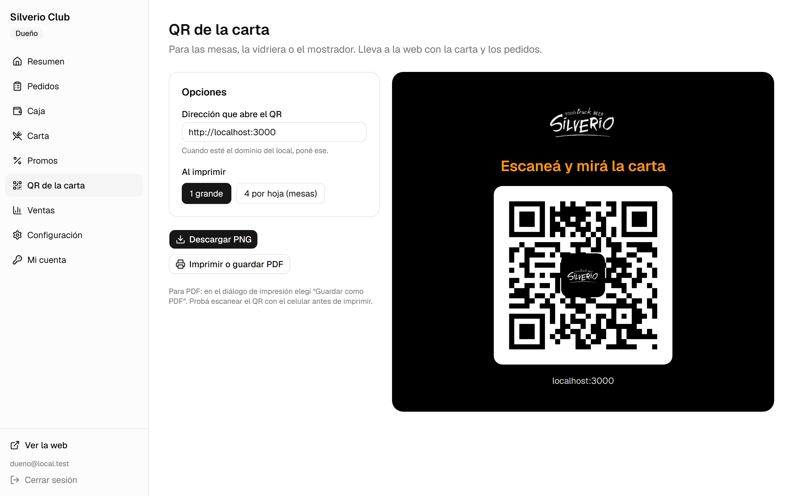
Generador de cartel QR listo para descargar o imprimir.
Configuración general del local
Exclusiva para el Dueño. Desde acá podés actualizar cuando quieras:
Contacto y redes: el número de WhatsApp que recibe los pedidos (5492615745326), teléfono e Instagram/Facebook.
Horarios de atención: turnos para cada día de la semana, más Cierres especiales por feriados o vacaciones (fuera de horario la web muestra “Cerrado” y no permite enviar pedidos).
Formas de entrega y Pedidos falsos: activar/desactivar retiro o delivery, el filtro de confirmación para clientes nuevos y la lista de números bloqueados.
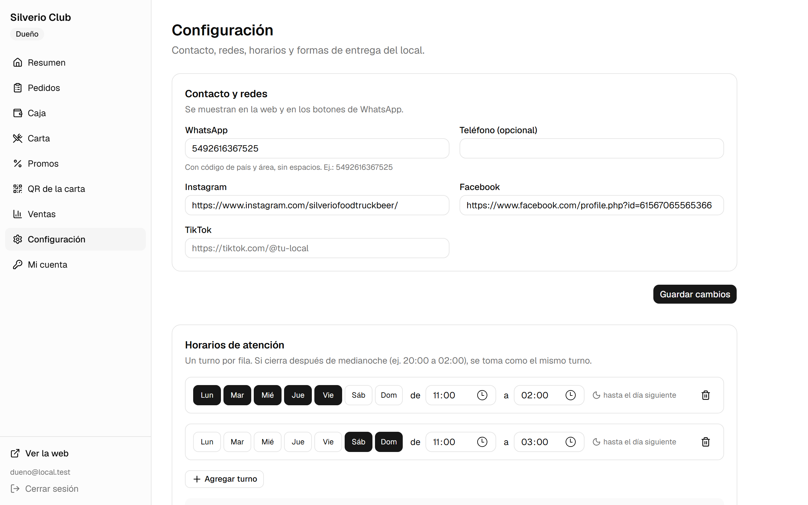
Configuración de WhatsApp, redes y horarios de atención.
14. Así pide tu cliente y solución de problemas
Conocer el recorrido en el celular del cliente te ayuda a asistirlo en segundos si te consulta:
Entra a la web, toca Hacer mi Pedido o elige una promo/producto con el botón +.
Abre su carrito, completa su nombre y WhatsApp, elige cómo paga y toca Confirmar pedido.
Ve su número de pedido (ej. #1) y desde Seguir mi pedido mira en vivo cuando pasa a En preparación y a Listo para retirar en Ozamis y Vergara, Maipú.
1. El carrito en el celular.2. Pedido recibido.3. Seguimiento en vivo.
Respuestas rápidas a dudas frecuentes
Situación
Cómo resolverla en segundos
No suena la alerta cuando entra un pedido
Tocá el botón amarillo Activar timbre arriba a la derecha al abrir el panel y verificá el volumen de la compu.
Un cliente dice que la web figura “Cerrado”
Revisá en Configuración → Horarios de atención que el turno del día actual cubra la hora actual.
Marqué un pedido como cobrado por error
Tocá Deshacer en el aviso inferior o abrí la tarjeta del pedido y tocá Deshacer cobro.
Un pedido nuevo se canceló solo a los 15 min
Era un cliente nuevo que no envió el WhatsApp de confirmación. Si igual te escribe, cargalo con + Cargar en Mostrador.
🤝 Soporte técnico directo · Cristian Delgado (DelgadoDev)Ante cualquier duda o si necesitás ajustar colores, textos de portada o secciones especiales, escribinos directamente por WhatsApp al 261 747-8090 o desde delgadodev.com.ar.